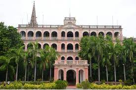

The College is accreditated by National Board of Accreditation (NBA), New Delhi, approved by All India Council for Technical Education (AICTE) and recognized by UGC with 12(B) & 2(f) status.
The college is located near Poonamallee, Chennai, and is well connected by road covering, Chennai, Kancheepuram and Thiruvallur districts.
The Trust started Panimalar Engineering College in the year 2000 in accordance with the general policy of the Government of Tamilnadu. The policy emphasizes to give high priority to meet the demand for trained engineers for various industrial and development projects in the state of Tamilnadu and the rest of India.

Since its inception in 2008, the Department of Aeronautical Engineering has over the years adapted and improved with the fast pace of technology.
A sincere and hardworking student body with the wholehearted support of dedicated faculty have contributed in to the professional success enjoyed by the student’s who graduated from this department.

Cognizant is proud to be associated with st. Joseph's College of Engineering, a premier centre of higher education with a mission of pursuing excellence in
